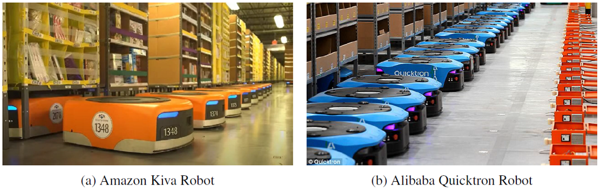
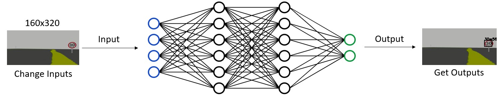
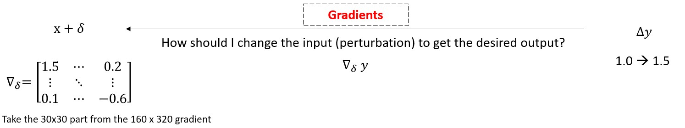
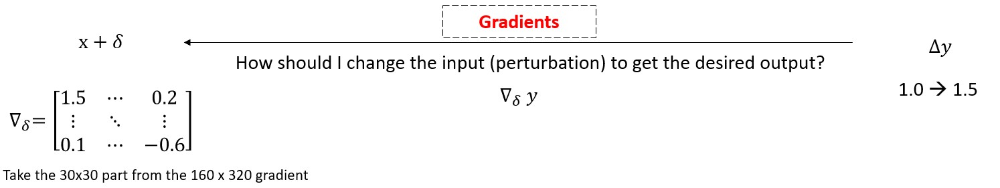
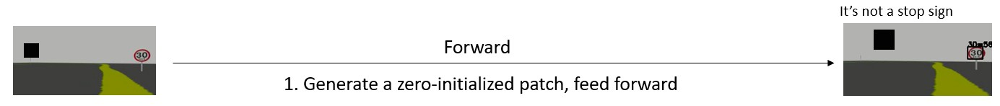
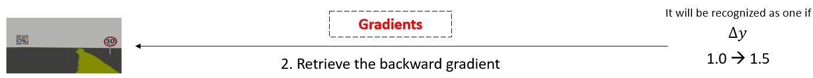
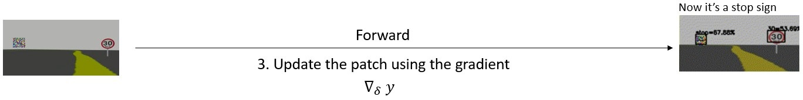
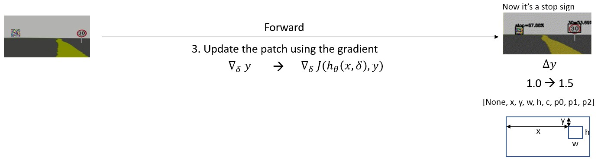

Adversarial Attacks against Deep Learning Models
Research Question: Is Deep Learning secure for Robots?
- Background
- Project 1: Adversarial Driving
- Project 2: Adversarial Detection
Han Wu @wuhanstudio
Ph.D. Student at the University of Exeter, in the U.K.
Background
Is Deep Learning secure for Robots?
Intelligent Robots: Deep Learning in Robotics
 Deep Learning for Autonomous Driving
Deep Learning for Autonomous Driving

Adversarial attacks against image classification

Project 1: Adversarial Driving
Project 2: Adversarial Detection
Deep Learning Models are differentiable
 

Deep Learning Models are differentiable
  Deep Learning Models are differentiable

One Targeted Attack

Multi Targeted Attack

Multi Untargeted Attack
Adversarial Detection: One Targeted Attack
$$J_1(x, \delta, y_h) = max(\ \sigma(c) * \sigma(p_0) \ )$$
# One Targeted Attack
loss = K.max(K.sigmoid(K.reshape(out, (-1, 8))[:, 4]) * K.sigmoid(K.reshape(out, (-1, 8))[:, 5]))
grads = K.gradients(loss, self.model.input)

Adversarial Detection: Multi Targeted Attack
$$J_1(x, \delta, y_h) = max(\ \sigma(c) * \sigma(p_0) \ )$$
$$J_2(x, \delta, y_h) = \sigma(c) * \sigma(p_0)$$
# Multi Targeted Attack
loss = K.sigmoid(K.reshape(out, (-1, 8))[:, 4]) * K.sigmoid(K.reshape(out, (-1, 8))[:, 5])
grads = K.gradients(loss, self.model.input)
Adversarial Detection: Multi Untargeted Attack
$$J_1(x, \delta, y_h) = max(\ \sigma(c) * \sigma(p_0) \ )$$
$$J_2(x, \delta, y_h) = \sigma(c) * \sigma(p_0)$$
$$J_3(x, \delta, y_h) = \sigma(c) * \sum\sigma(p_i)$$
# Multi Untargeted Attack
loss = K.sigmoid(K.reshape(out, (-1, 8))[:, 4]) * K.sum(K.sigmoid(K.reshape(out, (-1, 8))[:, 5:]))
grads = K.gradients(loss, self.model.input)